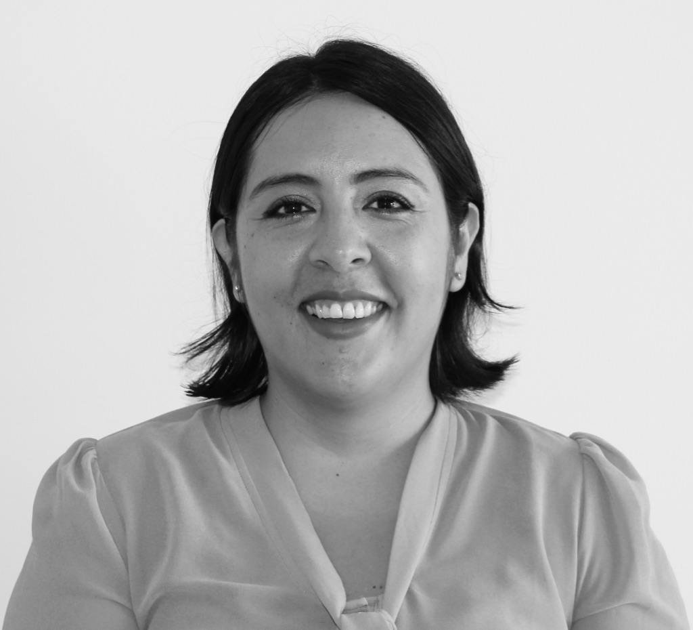

Presentación
Marianela realiza en su consulta acompañamiento psicológico individual y de parejas, desde una perspectiva familiar sistémica. Ayudando a las personas a abordar dificultades psicológicas y relacionales que generen un malestar a nivel individual o en las relaciones que establecemos con los demás, ya sea en nuestras propias familias o con el entorno.
Formada en la Pontificia Universidad Católica de Valparaíso (Chile), su título de psicóloga está reconocido en Francia por el Ministerio de la educación nacional, de la educación superior y de la investigación. Marianela es psicóloga certificada por la Agencia Regional de Salud (Nº ADELI 31 93 2833 2).
Informaciones prácticas
| Sesión | Duración | Tarifa |
|---|---|---|
| Individual | 1 hora | 40€ |
| Parejas | 1 hora | 50€ |
| Estudiantes y personas en busqueda de trabajo | 1 hora | 30€ |
- Dirección
- 36 avenue Georges Pompidou • Balma
¿Cómo llegar en transporte en común? Metro Balma Gramont y Bus 72 (15 minutos desde Metro Jean Jaurès)
Contacto
Para reserva de horas o mayor información, comunicarse a:
- Teléfono
- 07 69 41 35 66
- ps.urrea@gmail.com